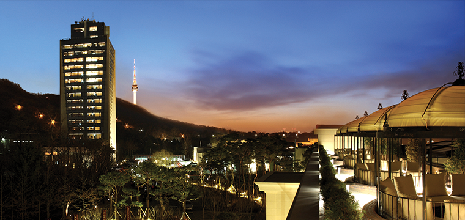

-

Sanctuary for the Senses
Banyan Tree Club & Spa Seoul is the first urban resort of awards-winning Banyan Tree Hotel & Resort. Banyan Tree on the land of 70,000 square meters is located in NamSan at the center of Seoul and you can enjoy sound resting and private time away from daily life.
It opened in June, 2010 after remodeling Tower Hotel built by the architect, Swoo Geun Kim. Banyan Tree Club & Spa provides private members' club along with hotel service domestically for the first time and we have kept trying to offer the world's best service to be called as a six-star hotel.
50 rooms and suite rooms in each hotel complex and club complex have individual unique design and offer the optimum environment for resting. Pool for relaxation equipped in each room and great seasonal view of NamSan from all direction is absolutely irresistable.
Please try the taste of Banyan Tree through the Asian cuisine from Granum Dining Lounge, European dish from Festa Bistro and Bar and the foods from Oasis restaurant in the Oasis Pool. Moreover, you can also enjoy various outdoor and recreation facilities with full of joy and excitement.